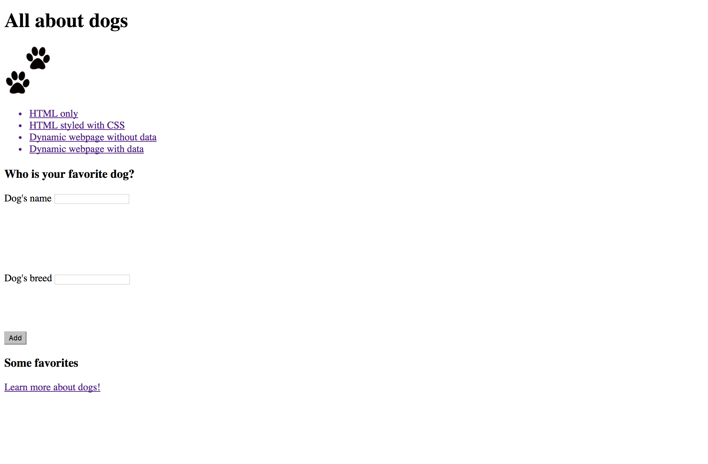
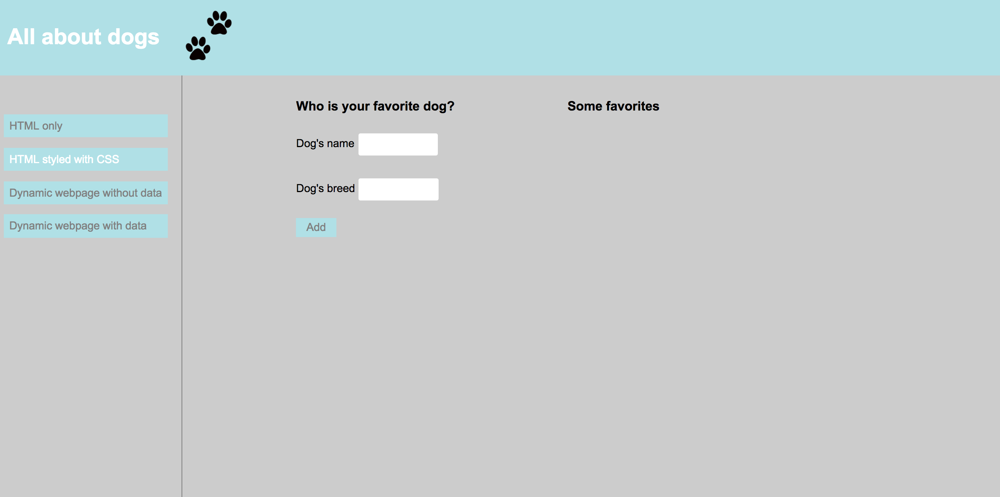
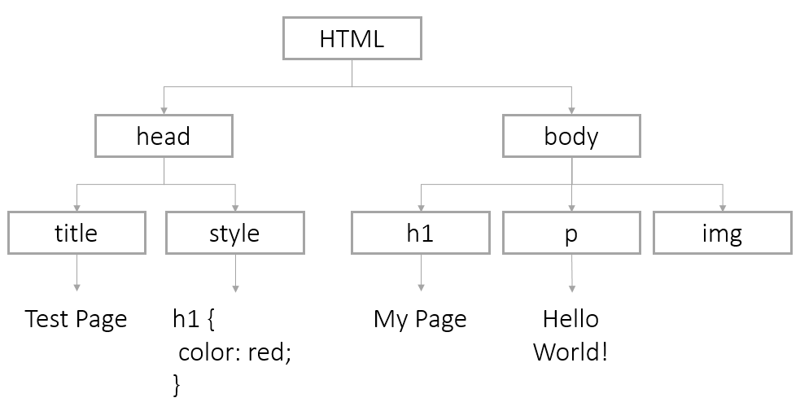
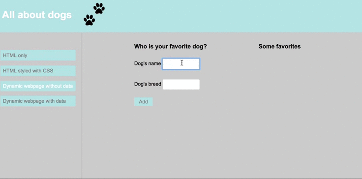
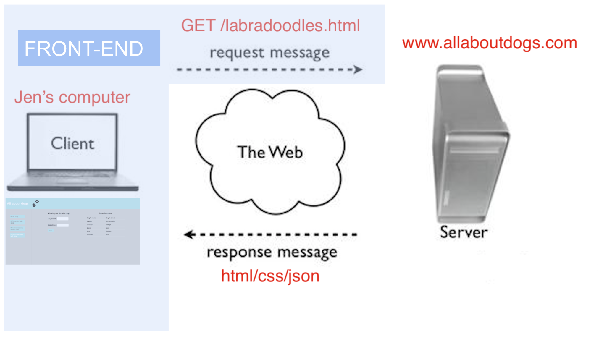
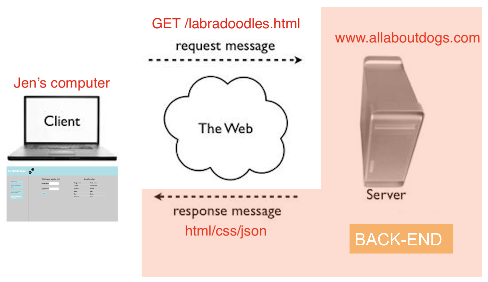
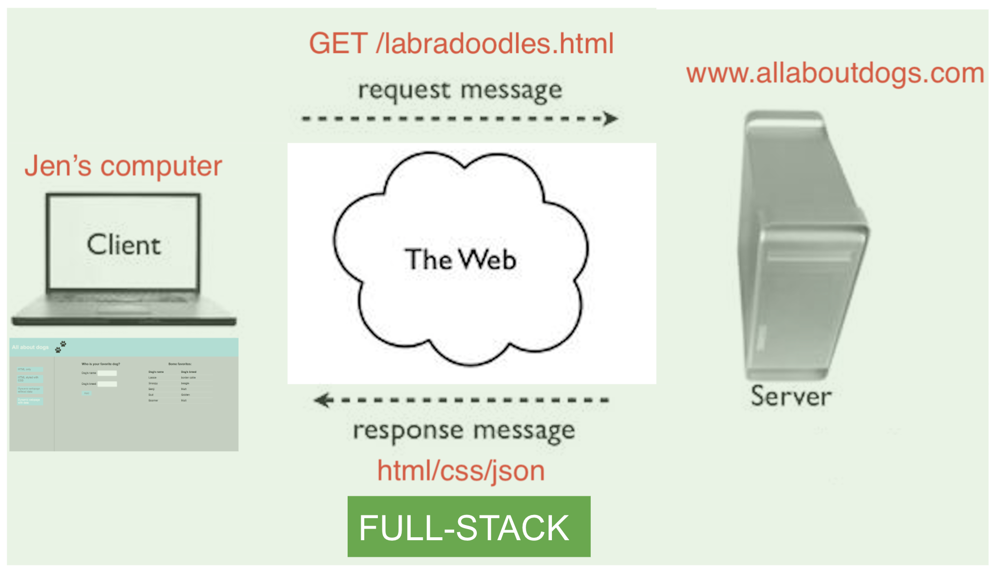
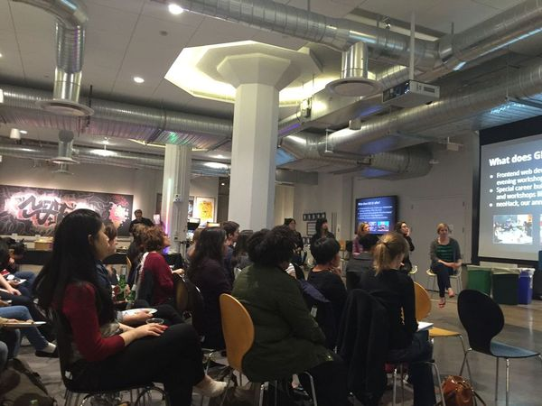

JavaScript for Web Design
Welcome!
Girl Develop It is here to provide affordable and accessible programs to learn software through mentorship and hands-on instruction.
Some "rules"
- We are here for you!
- Every question is important
- Help each other
- Have fun
About Me
I am Aisha Blake. I work for Gatsby. Follow me on twitter @AishaBlake
Other intros: Tammy and Katie
Welcome!
Tell us about yourself.
- Who are you?
- What do you hope to get out of the class?
- What is your favorite or dream vacation destination?
JavaScript for Web Design
- Anatomy of a Website
- HTML + CSS Review
- History of JavaScript
- The DOM
- Using the Inspector
- JavaScript Frameworks
Terms
-
Web designThe process of planning, structuring and creating a website
-
Web developmentThe process of programming dynamic web applications
-
Front endThe outwardly visible elements of a website or application
-
Back endThe inner workings and functionality of a website or application.
Anatomy of a website
A website uses HTML to structure content, CSS to make it look good & JavaScript for interaction.
Anatomy of a website
- HTML (text and images)
- CSS (styling)
- Javascript (functionality)
- JSON (data)
Brief HTML & CSS Overview
HTML

All about dogs

HTML
- Use to add content to your webpage (text, images) using HTML elements
- HTML elements are represented by tags and have content inside them.
This is the content of a header
This is the content of a header
CSS
header {
color: white;
background-color: powderblue;
}
CSS
- Use to add styling to your webpage (color, layout)
- Is separate from HTML and can add the same styling to multiple webpages
Example: form w/o JS
- Go back to All About Dogs
- Try to submit your favorite dog using the form. What happens?
The form doesn't work! It's missing functionality
To give the form functionality, we need Javascript
What is JavaScript?
- JavaScript is standardized by the "ECMAScript" specifications.
- JavaScript is a client-side processing language. A browser reads the code and runs it directly.
- JavaScript interfaces with HTML and CSS.
- With JavaScript, you can write code once and use it everywhere. Remember, you want DRY code (Don't Repeat Yourself).
- JavaScript lets you build dynamic webpages that respond to input from users.
JavaScript is a client-side language (mostly)

Photo credits: Andrew E. Larson and John Seb Barber cc
How JavaScript interacts with HTML & CSS
The DOM Tree
We model the nested structure of an HTML page with the DOM (Document Object Model) Tree. The browser makes a "map" of all the elements on a page.
The DOM: Sample Code
<!DOCTYPE html>
<html>
<head>
<title>Test Page</title>
<style>
h1 {
color: red;
}
</style>
</head>
<body>
<h1>My Page</h1>
<p>Hello World!</p>
<img src="http://placekitten.com/200/300" alt="cat"/>
</body>
</html>
The DOM: Sample Model
DOM Access
Your browser automatically builds a Document Object to store the DOM of a page. To change a page:
- Find the DOM node and store it in a variable
- Use methods to manipulate the node
DOM Access: HTML 5
Get HTML Elements
document.getElementsByClassName(className);
Select with CSS
document.querySelector(cssQuery);
document.querySelectorAll(cssQuery);
Forms
You can collect information from users to use in functions. The most common method is an HTML form:
<form id="temperatureForm">
<label for="temp">Temperature:</label> <input type="text" id="temp" size="3"/> degrees in
<input type="radio" name="tempFormat" value="F" checked />Fahrenheit
<input type="radio" name="tempFormat" value="C" />Celsius <br />
<label for="submitButton"></label> <input id="tempSubmitButton" type="submit" value="Submit" />
</form>
Retrieving Form Data
You retrieve the values of form elements using the value method:
var temperature = document.getElementById('temp').value;
console.log (temperature);
You can retrieve the value of a form at any time. Try onblur (when a form element loses focus).
Javascript

addDog(name, breed);
Javascript
- Use to add functionality to your webpage
- Makes webpages dynamic and interactive
Exercise
- Go to All About Dogs
- Try to submit your favorite dog using the form. What happens?
- Refresh the page. Does the data persist?
The form works! Javascript gives it functionality
The data disappears! It is not being stored or retrieved.
To store and retrieve data we use JSON
What types of developers work on these webpages?
Front-end developers
Write client-side code to...
- create and design webpages using HTML and CSS
- give websites functionality using Javascript
- send requests to servers and handle their responses
Back-end developers
Write server-side code to...
- receive requests from clients and send back responses
- connect to a database to store and look up data sent as JSON
- handle other logic such as transforming data or performing calculations
Full-stack developers
Write server-side
and
client-side code!
Day in the life
Planning, thinking, drawing, debugging
Learn more!
Join one of our upcoming courses
